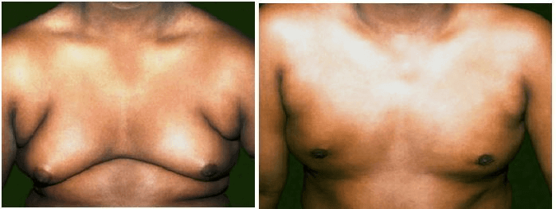

स्तनाग्रे

स्तनाशी संबंधित सौम्य आजार
गायनॅकोमॅश्टि शिया
16 वर्षांच्या तरुणच्या छातीचा डावा भाग गेल्या एक वर्षात वाढला आहे. त्याला कोणत्याही वेदना होत नाहीत. मात्र त्यामुळे पोहोताना तरुणला खूप ओशाळल्यासारखे होते.
72 वर्षांच्या भारत यांना छातीच्या डाव्या बाजुला टेंगुळ आल्यासारखे झाले आहे, गेल्या सहा महिन्यांपासून त्यांना अधूनमधून त्याचा त्रासही होत आहे.
स्तनाग्रे
स्तनाग्र

गायनॅकोमॅश्टियागायनॅकोमॅशिया म्हणजे काय?
पुरूषांच्या स्तनात पेशींचा गोळा वाढण्याला गायनॅकोमेशिया असे म्हणतात. स्तनाशी संबंधित हा सौम्य आजार (कर्करोग नाही) आहे. किशोरवयीन मुले आणि वृद्ध पुरूषांना साधारणपणे हा त्रास होतो. पण कोणत्याही वयात हा आजार होऊ शकतो. गायनॅकोमॅश्टियागायनॅकोमेशिया हा आजार सर्वत्र आढळणारा असला तरी त्याबद्दल फारसे बोलले जात नाही. प्रामुख्याने किशोरवयीन मुलांना ओशाळल्यासारखे होत असल्याने ते बोलत नाहीत. प्रत्येकी तीनपैकी दोन किशोरवयीन मुलांना काही प्रमाणात गायनॅकोमॅश्टियागायनॅकोमेशिया होतो आणि 90 टक्के मुलांचा गायनॅकोमेशियागायनॅकोमॅश्टिया आपोआप बरा होतो.
गायनॅकोमॅश्टियागायनॅकोमेशियाची प्रमुख कारणेकिशोरवयात पदार्पण केले की मुलांचे तारुण्य सुरू होते. पण काही मुलांना वयाच्या दहाव्या वर्षापासूनच बदल जाणवायला लागतात. तारुण्य सुरू होताच ऑईस्ट्रोजेन आणि टेस्टोस्टिरॉन या लैंगिकतेशी संबंधित संप्रेरकांच्या प्रमाणात वाढ होऊ लागते. ऑईस्ट्रोजेनने स्तनांची वाढ होते तर टेस्टोस्टिरॉनने स्तनाची वाढ थांबते.
वयात येत असताना मुलांना स्तन मऊ किंवा वाढत असल्याचे जाणवते आणि इतरही बदल जाणवू लागतात. शरीरातील ऑईस्ट्रोजेन आणि टेस्टोस्टिरॉनचे प्रमाण वाढते आणि त्यामुळे स्तनांमधील पेशींमध्ये बदल होतात. ऑईस्ट्रोजेनचे प्रमाण जर टेस्टोस्टेरॉनपेक्षा जास्त असेल तर स्तनामधील डक्ट्स आणि लोब्युल्सचे प्रमाण वाढून स्तन लक्षात येण्यासारखे मोठे दिसू लागते.
वयाच्या पंधरा वर्षापर्यंत टेस्टास्टेरॉनचे प्रमाण ऑईस्ट्रोजेनच्या प्रमाणापेक्षा जास्त होऊन स्थिर होण्यास सुरूवात होते. त्यामुळे स्तनामधल्या पेशींवर ऑईस्ट्रोजेनचा परिणाम होत नाही. पुरूष १९ वर्षांचा झाला की त्याचे स्तन छोटे आणि सपाट होऊ लागतात.
वाढते वयव्यक्तीच्या वाढत्या वयाबरोबर तिच्या शरीरातील चरबीचे प्रमाण वाढते आणि त्यामुळे ऑईस्ट्रोजेनची निर्मिती वाढते. त्यातच पुरूषांच्या वाढत्या वयाबरोबर टेस्टोस्टेरॉनच्या निर्मितीचे प्रमाण कमी होत जाते. ऑईस्ट्रोजेनच्या वाढीचे प्रमाण आणि टेस्टोस्टेरॉन कमी होण्याचे प्रमाण यात विसंगती निर्माण झाली तर स्तनांचा आकार मोठा होतो. नंतरच्या आयुष्यात वजन वाढले तर स्तनांचा आकार वाढलेला दिसतो. याला स्युडो गायनॅकोमॅश्टियागायनॅकोमेशिया असे म्हणतात. अनेक पुरूष याला वाढत्या वयातील बदल म्हणून स्वीकारतात.
इतर कारणेकाही औषधे (डॉक्टरांनी लिहून दिलेली किंवा परस्पर घेतलेली) गायनॅकोमॅश्टियागायनॅकोमेशिया होण्यास कारणीभूत ठरु शकतात. त्या औषधांमध्ये एकतर शरीरात फिरणार्या संप्रेरकांचं प्रमाण वाढेल एवढे ऑईस्ट्रोजेन असते किंवा ऑईस्ट्रोजनसारखा परिणाम होईल असे घटक असतात. गाज्यासारख्या मादक पदार्थाच्या सेवनानेही परिणाम होतो. काही औषधांमुळे टेस्टोस्टेरॉइनची निर्मितीच बंद होते किंवा त्याचे शरीरातील वितरणाचे प्रमाण कमी होते.
डॉक्टरांनी लिहून दिलेल्या काही औषधांमुळे शरारीतील संप्रेरकांचे संतुलन बदलू शकते. उच्च रक्तदाब, ह्रदयाचे आजार,, मानसिक आजार,, पोटाचा अल्सर,, कर्करोगाच्या काही उपचारपद्धती यासाठी घेतली जाणारी औषधे,, तसंच प्रतिजैविक औषधे आणि स्नायू बळकट करण्यासाठी केलेल्या औंषधोपचारांमुळे गायनॅकोमॅश्टिया गायनॅकोमेशिया होऊ शकतो.
वनौषधी उत्पादनेकाही वनौषधी आणि सौंदर्यप्रसाधनांमध्ये ऑइस्ट्रोजेनचा समावेश असतो. यामुळे लहान मुले किंवा प्रौढ व्यक्तींच्या शरीरातील संप्रेरकांच्या वितरणाचे प्रमाण वाढते किंवा ऑइस्ट्रोजेनसारखा परिणाम जाणवतो. या गोष्टींचा वापर थांबवला की स्वाभाविकरित्या स्तनांमधील पेशींचे प्रमाण स्थिर होते.
आहार आणि वजनशरीरात चरबीयुक्त पेशींचे प्रमाण वाढले की ऑइस्ट्रोजेनच्या निर्मितीचे प्रमाण वाढते. त्यामुळे स्तनांच्या पेशींमध्ये वाढ होते. संतुलित आहार आणि व्यायामामुळे वजन नियंत्रित ठेवता येते.
मद्यअतिमद्यपानामुळे यकृतावर परिणाम होऊन त्याचे अनेक दुष्परिणाम होऊ शकतात. अतिमद्यपान केल्यास यकृताची हानी होते आणि संप्रेरकांचे संतुलन बिघडते. टेस्टास्टेरॉईनचे प्रमाण झपाट्याने कमी होते आणि ऑईस्ट्रोजेनचे वितरण रोखण्याचे कार्य यकृताने बंद केल्याने ऑईस्ट्रोजेनचे शरीरातील प्रमाण वाढते. याचा अर्थ स्तनांच्या पेशी वाढू शकतात.
कधीकधी पुरूषांना गायनॅकोमॅश्टियागायनॅकोमेशिया का होतो ते सांगणे कठीण असते. पण त्याचे कारण कळले की लगेच औषधोपचार सुरू करता येतात.गायनॅकोमेशियाची लक्षणे कोणती?
स्तनाग्राच्या मागे लहान किंवा मोठ्या प्रमाणात पेशी वाढल्याने ते स्त्रीच्या स्तनासारखे दिसू लागणे हे गायनॅकोमॅश्टियागायनॅकोमेशियाचे लक्षण असते. याचा परिणाम एका किंवा दोन्ही स्तनांवर होतो. त्यामुळे तो भाग खूप मऊ जाणवतो किंवा स्पर्ध केल्यास वेदनाही होतात
स्तनांच्या पेशी वाढल्याने ट्रू गायनॅकोमॅश्टियागायनॅकोमेशिया होतो,, तर चरबीयुक्त पेशी वाढल्याने होणारा स्युडो गायनॅकोमॅश्टियागायनॅकोमेशिया वेगळा असतो. तर गायनॅकोमॅश्टियागायनॅकोमेशियाध्ये दोन्ही प्रकार एकत्रही होऊ शकतात.
मुलांमध्ये स्तनांचा विकासस्तनाच्या पेशी आईच्या गर्भात असताना वाढतात. या काळात स्तनाग्राच्या मागे छोट्या नळ्यांसारखा भाग तयार होतो. मुले किशोरवयात आणि तारुण्यात पोहोचेपर्यंत त्यांच्या स्तनातील पेशी मुलींसारख्याच असतात. पण त्यांनी तारुण्यात प्रवेश केला की संप्रेरकांच्या प्रमाणाचा स्तनांच्या पेशींच्या वाढीवर परिणाम होतो.
मुलींमध्ये ऑईस्ट्रोजेन संप्रेरकांमुळे स्तनांचा विकास होतो आणि दुधनिर्माण करणार्या ग्रंथी डक्टच्या शेवटी तयार होतात, त्यामुळे स्त्रियांच्या स्तनातून स्तनाग्रापर्यंत दूध वाहून नेता येते.
वयात आल्यानंतर मुलांमध्ये ऑइस्ट्रोजेनचे प्रमाण जास्त असते पण किशोरवयातील अखेरच्या वर्षांमध्ये त्यांच्या शरिरात टेस्टोस्टेरॉन संप्रेरकाचे प्रमाण अत्युच्च असते. त्यामुळे स्तनांच्या पेशींवर होणारा ऑइस्ट्रोजेनचा परिणाम थांबतो आणि स्तन सपाट होतात.
गायनॅकोमॅश्टियागायनेकोमेशियाचे निदान कसे होते?
दोन्ही स्तनांचे अल्ट्रासाऊंड स्कॅन आणि तज्ज्ञ डॉक्टरांकडून व्यवस्थित स्तनतपासणी गरजेची आहे. जर रुग्ण वयस्कर व्यक्ती असेल तर सुरूवातीच्या अशा तपासणीनंतर तज्ज्ञ डॉक्टर मॅमोग्राम (स्तनांचा एक्सरे) आणि बायोप्सी काढण्याचा सल्ला देतात.
गायनॅकोमॅश्टियागायनेकॉमेशियामुळे इतरही आजारांची लक्षणे दिसतात उदा. कंठग्रंथी अस्थिर होणे थायरॉइड ग्लँड अतिक्रियाशील किंवा तज्ज्ञ डॉक्टर तुमची मान,,पोट आणि वीर्योत्पादक ग्रंथी तपासू शकतात. रक्त तपासणी,, यकृत तपासणी,, अल्फा फेटो फिंटो प्रोटीटेन आणि बी एचसीजीही करायला सांगू शकतात.
गायनॅकोमॅश्टियागायनेकोमेशियावर कोणते उपचार करतात??
बर्याच प्रकरणात खात्री करुन घेणे महत्त्वाचे असते. काही विशिष्ट उपचारांचा सल्लाही दिला जात नाही. बर्याच लोकांच्या स्तनातील अतिरिक्त पेशी नष्ट करण्यासाठी गायनॅकोमॅश्टियागायनेकोमेशियाला कारणीभूत ठरणार्या गोष्टी (औषधोपचारांमध्ये बदल,, शरीरातील अतिरिक्त चरबी कमी करणे किंवा दारुचे प्रमाण कमी करणे) बंद कराव्या लागतात. काही लोकांकरीता तज्ज्ञ डॉक्टर अल्पकालीन उपचार (डॅनेझॉल टॅध्टॅमोक्झीफेन) करतात.
साधारणत: दैनंदिन जीवनातील बदल,, औषधोपचारातील बदल करुनही गायनॅकोमॅश्टियागायनेकोमेशिया न सुधारणे किंवा खूप काळापासून गायनॅकोमॅश्टियागायनेकोमेशिया असल्यास डॉक्टर शस्त्रक्रियेची शिफारस करतात.
तज्ज्ञ डॉक्टरांनी शस्त्रक्रियेचा पर्याय निवडण्याआधी त्यातील संभाव्य धोक्यांबाबत चर्चा करण्याची गरज असते कारण गायनेकोमेशियाची शस्त्रक्रिया तेवढी सरळ नसते. गायनॅकोमॅश्टियागायनेकोमेशियाचा आकार आणि स्तनांच्या भागातील अतिरिक्त त्वचा यावर शस्त्रक्रियेचा प्रकार अवलंबून असतो. पुरूषाच्या छातीचा आकार निमयित करण्यासाठी एकापेक्षा जास्त शस्त्रक्रियाही केल्या जाऊ शकतात.
प्रभावित भागातील चरबी काढून टाकण्याची शस्त्रक्रिया ही वापरली जाणारी सार्वजनिक प्रक्रिया आहे. यात उपचारांची प्रक्रिया असते किंवा किंवा स्तन कमी करण्याची शस्त्रक्रिया (मॅमोप्लास्टी) केली जाते. स्तन कमी करण्याची प्रक्रिया शस्त्रक्रिया न करताही केली जाऊ शकते. कारण वरील सर्व प्रक्रियांमध्ये स्तनांच्या पेशी,, उरतात गायनॅकोमॅश्टियागायनेकोमेशिया पुन्हा होण्याची शक्यता असते.

गायनॅकोमॅश्टियागायनेकोमेशियामुळे तुम्हाला त्रासदायक वाटणे,, ओशाळवाणे होणे आणि एकटे एकटे वाटू लागते. वयात येणार्या मुलांना त्यांच्यातील इतर शारिरीक बदलांसोबतच वाढत्या किंवा वेदनादायी स्तनांबाबत कुणाशी बोलणे अवघड वाटते. त्यामुळे ही परिस्थिती सार्वजनिक सामान्य असते याची त्यांना अनेकदा जाणीव नसते. वयस्कर लोकांना त्यांच्या स्तनांचा आकार वाढणे हे कर्करोगाचे लक्षण वाटते
स्तन जागरुकतेबाबत 4 नियम